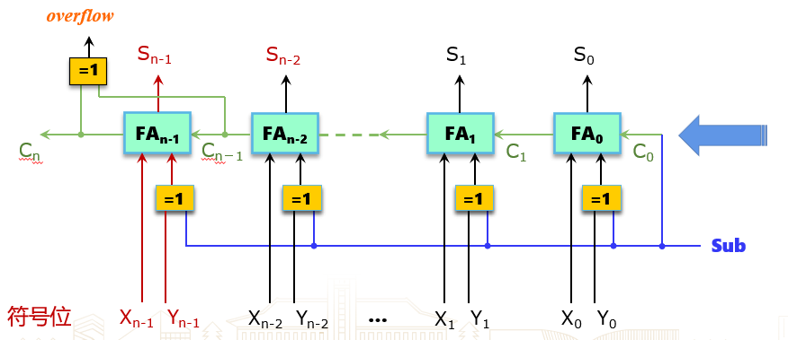
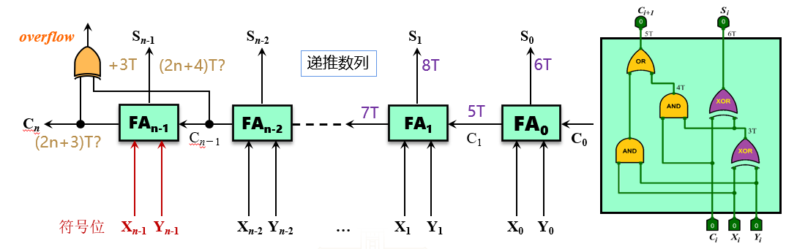
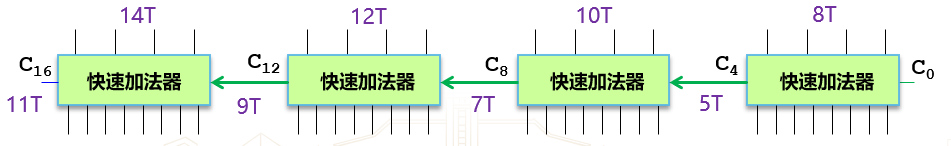

补码加法运算部件
溢出判断逻辑：正正得负，负负得正.
设两数符号位分别为 f0,f1，和数符号位为 fs，定义溢出检测信号位 Overflow(OF)，则
OF=f0ˉ⋅f1ˉ⋅fs+f0⋅f1⋅fsˉ
还有一种判断逻辑：设两数最高数值位产生的进位位为 Cn，符号位进位位为 Cf，则
OF=Cf⊕Cn
全加器
带进位位的一位全加器的真值表如下：
| 加数 Xi |
加数 Yi |
低位进位 Ci |
和数 Si |
进位 Ci+1 |
| 0 |
0 |
0 |
0 |
0 |
| 0 |
0 |
1 |
1 |
0 |
| 0 |
1 |
0 |
1 |
0 |
| 0 |
1 |
1 |
0 |
1 |
| 1 |
0 |
0 |
1 |
0 |
| 1 |
0 |
1 |
0 |
1 |
| 1 |
1 |
0 |
0 |
1 |
| 1 |
1 |
1 |
1 |
1 |
SiCi+1=Xi⊕Yi⊕Ci=Xi⋅Yi+(Xi⊕Yi)⋅Ci
门级电路延迟
- 与非门：1 T
- 或非门：1 T
- 与门：1 T
- 或门：1 T
- 非门：1 T
- 异或门：3 T
不严谨，例如与门是由与非门和非门组成，以及门器件内部层级也不一样。但是为了简化运算，如此规定。
门级电路延迟计算公式：
tout=max{tin1,tin2}+tgate

补码加减法实现
行波进位加法器
无符号数溢出判断：加法变小，减法变大。
设减法操作的指示位为 SUB , 最高位产生的进位为 Cout，定义一个溢出检测的信号位 Unsigned Overflow(UOF)，则
UOF=SUB⊕Cout
行波进位加法器（Ripple Carry Adder）

门级电路延迟：

先行进位加法器
- 性能瓶颈：进位运算。
- 优化思路：提前产生各位进位输入，并行各位加法运算
已知
SiCi+1=Xi⊕Yi⊕Ci=Xi⋅Yi+(Xi⊕Yi)⋅Ci
定义进位生成函数（Generate）和进位传递函数（Propagate）：
GiPi=Xi⋅Yi=Xi⊕Yi
从而
SiCi+1=Pi⊕Ci=Gi+Pi⋅Ci
则有
C1C2C3=G0+P0C0=G1+P1C1=G1+P1(G0+P0C0)=G1+P1G0+P1P0C0=G2+P2C2=G2+P2(G1+P1G0+P1P0C0)=G2+P2G1+P2P1G0+P2P1P0C0
即
Cn=Gn−1+Pn−1Gn−2+Pn−1Pn−2Gn−3+⋯+Pn−1Pn−2⋯P0C0
这样，进位输出仅与最低位进位输入 C0 有关，可以并行计算。
但由于位数越多，进位链运算电路复杂度越高，通常按 4 位一组进行分组运算，即
C4=G3+P3G2+P3P2G1+P3P2P1G0+P3P2P1P0C0
与门异或门电路（门延迟为 3 T）：

四位先行进位电路（门延迟为 2 T）：

组合形成先行进位加法器（Carry Lookahead Adder, CLA）。一个四位 CLA 门电路延迟为 8 T。

为实现 16 位 CLA，第一直觉是将 4 位 CLA 进行组件串行，如下图：

为进行优化，可以考虑实现组件并行。
类似地，已知
C4=(G3+P3G2+P3P2G1+P3P2P1G0)+(P3P2P1P0C0)
令组件进位生成函数和组件进位传递函数：
G∗P∗=G3+P3G2+P3P2G1+P3P2P1G0=P3P2P1P0
从而
C4=G∗+P∗C0
先行进位电路（门延迟为 2 T）：

先行进位（发生器）芯片 CLA 74182：

从而得到了 16 位先行进位运算部件：

其门电路延迟为 12 T：
- 生成 P∗,G∗：5 T
- 生成 C3/C12：2 T
- 计算进位：2 T
- 求和：3 T
类似有 64 位先行进位运算部件：

其门电路延迟为 16 T：
- 生成 P,G 和第一级 P∗,G∗：5 T
- 生成第二级 P∗,G∗：2 T
- 生成 C3/C48：2 T
- 生成 C52：2 T
- 计算进位：2 T
- 求和：3 T
32 位先行进位运算部件（不够四个，直接串行）：

设计太精妙了，只想到串行，全部串行，还可以这样优化。自然也记不住。
补码乘法运算部件
阵列乘法器
- 符号位单独运算：S=S1⊕S2
- 乘数绝对值乘积：M=M1×M2
横向进位无符号阵列乘法（进位和第一个数「即最上面的数」相加）
共 n(n−1) 个全加器，约为 (6n(n−1)+1)T 的门延迟。

斜向进位无符号阵列乘法（进位和最后一个数「即最下面的数」相加）
共 n(n−1) 个全加器，约为 (12(n−1)+1)T 的门延迟。

原码乘法运算部件

补码乘法运算部件

阵列乘法器的优化
需要 n(n−1) 个全加器，是优化要点。
布斯两位乘
核心：乘数为 0 不产生加，乘数为 1 产生加或减。
假设 X,Y 为被乘数和乘数，x,y 分别为其位数，中间结果 A,S 和乘法结果 P 都是 x+y+1 位。
- 计算中间结果 A（Addition）和 S（Subtraction）并初始化 P（Production）：
- A：被乘数 X 放在高 x 位，低 y+1 位补 0。
- S：−X 补码 [−X]c 放在高 x 位，低 y+1 位补 0。
- S=[−X]c∣0
- P：在高 x 位补 0，接着 y 位放乘数 Y，最低位补 0。
- P=0∣Y∣0
- 根据 P 最低两位进行运算：
- P[1:0]=00：不做运算
- P[1:0]=01：P=P+A
- P[1:0]=10：P=P+S
- P[1:0]=11：不做运算
- 将 P 算术右移 1 位，即 P=P≫1
- 重复步骤 2 和 3，共进行 y 次。
- 截断 P 最后一位，得到最终结果。

正确性检测
- 有符号：乘积高 n 位全为符号位乘法运算结果
- 无符号：乘积高 n 位全为 0
算术逻辑部件（ALU）
IA-32(x86-32) 中的 EFLAGS 寄存器
- ZF：结果为 0
- SF：结果为负
- CF：进位/借位
- OF：有符号溢出
MIPS, RISV-V 无标志寄存器，但仍有标志位。
数据总线设计
单总线结构 ALU 数据通路
- IB：内部数据总线
- CLK：时钟信号
- R：通用寄存器
- LA, LB：临时数据寄存器
- ALUOP：运算控制信号

双总线结构 ALU 数据通路


三总线结构 ALU 数据通路

总线越多性能越好，但占据空间越大，成本越高。